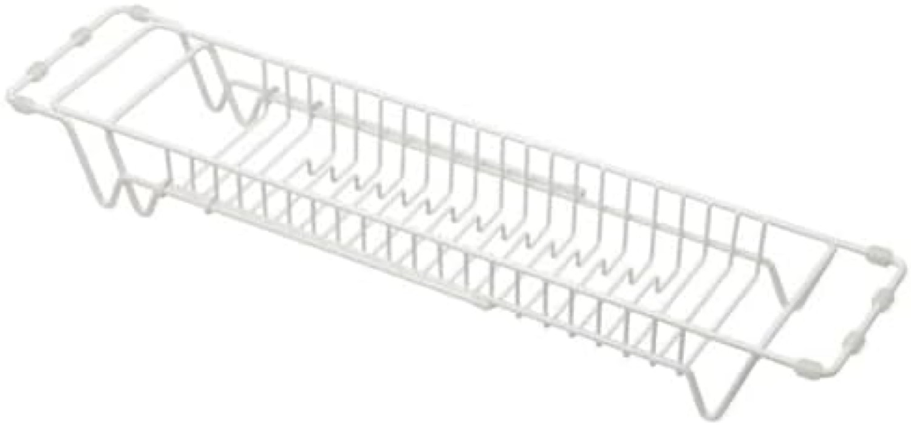
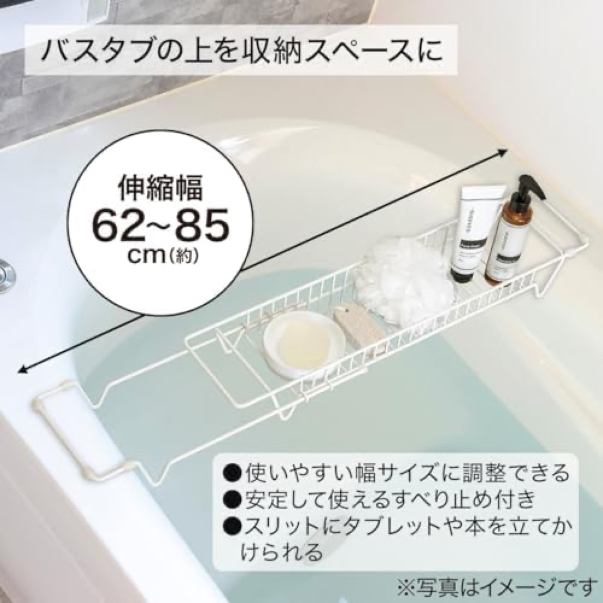
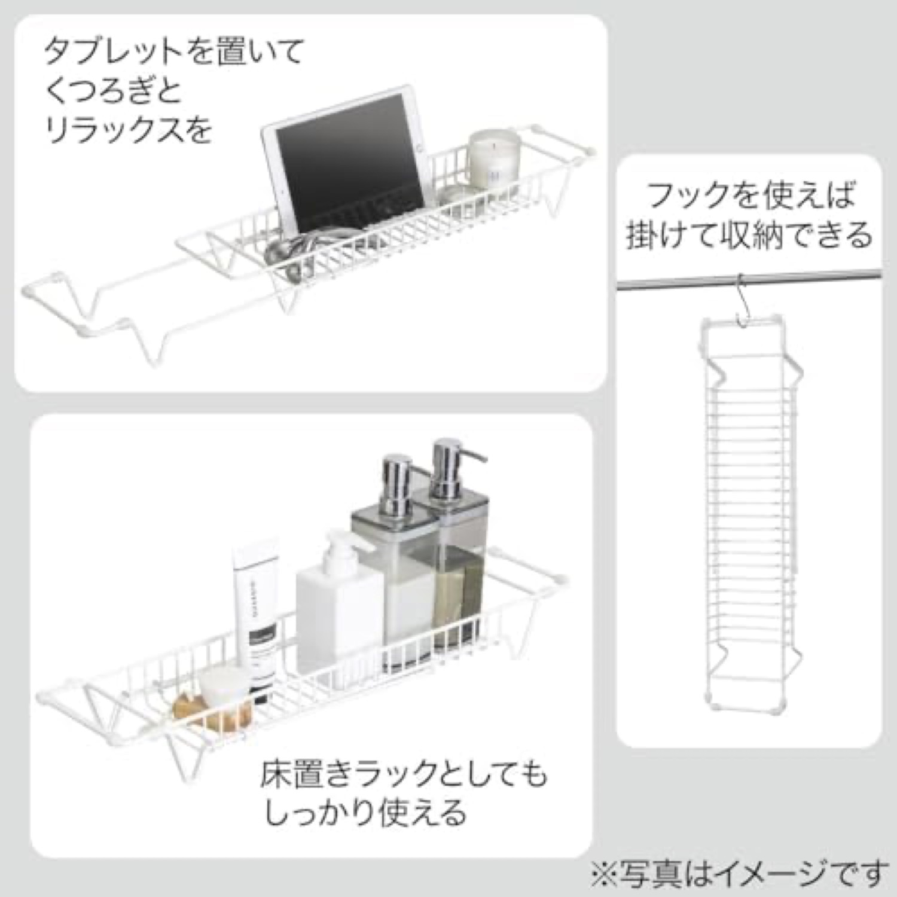
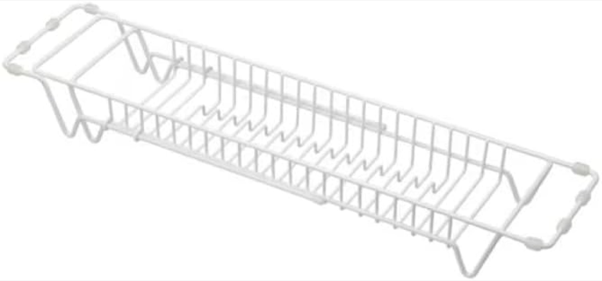
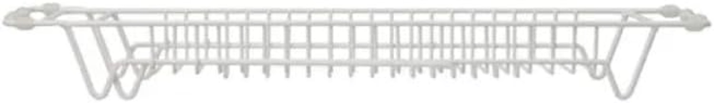
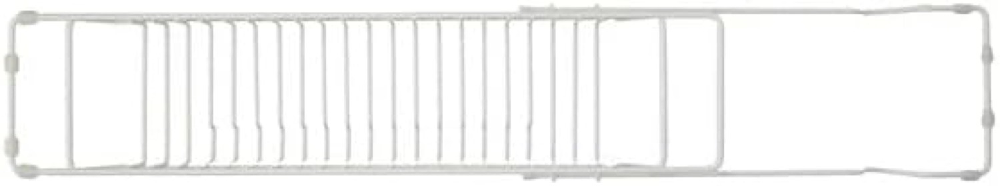
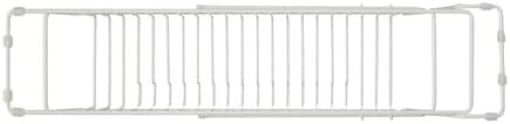

NITORI is Japan's largest home-furnishings retailer (the "IKEA of Japan"). Yet its own cheap resin tray earns the worst rating of all ten tracked: 3.6★. Even a giant retailer's commodity version disappoints.ニトリは日本最大の家具・ホームリテーラー（「日本のIKEA」）。だが自社の安価な樹脂トレーは追跡10商品で最低の3.6★。巨大リテーラーの廉価版でも期待外れ。







Verdict: retail-standard, soulless. Seven catalog images and a NITORI Brand Store, sold by Amazon. No video, no story, and the lowest rating of the ten despite the retailer's scale.評価：小売標準、無個性。カタログ画像7とニトリのBrand Store、Amazon販売。動画も物語もなく、規模に反して10商品で最低評価。
Distribution, brand and scale, yet a 3.6★ product. Cheap resin plus a flat catalog page is not enough to satisfy or to stand out.流通・ブランド・規模を持つのに3.6★。安樹脂＋平板なカタログでは満足も差別化も不足。
Sold by Amazon with a NITORI Brand Store and the retailer's huge name recognition, but the 3.6★ product undercuts any amount of reach.Amazon販売＋ニトリのBrand Store＋圧倒的な知名度。だが3.6★の製品がどれだけの到達も帳消しにする。
The clearest proof in the set that product quality beats distribution. Even Japan's biggest homeware brand cannot sell a thin resin tray well.セットで最も明確な「製品品質は流通に勝つ」証拠。日本最大のホームブランドでも薄い樹脂トレーは上手く売れない。
Modest velocity and the lowest rating. The newest of the set (tracked since Aug 2024).控えめな速度と最低評価。セット最新（2024年8月から追跡）。
Source: Keepa PRO, 2026-06-18.出典：Keepa PRO 2026-06-18。
~48% in 1-3★ · the worst of all ten, driven by a huge 3★ block (mediocre, not broken).1〜3★は約48%。10商品で最悪、大きな3★の塊（壊れてはいないが平凡）が主因。
The 38% sitting at 3★ is the signature of "it works, but it's just OK". For cheap resin the documented category complaints are flimsy feel and instability (dossier §4). Buyers expected more from the NITORI name and got a plain tray.3★に38%が並ぶのは「使えるが、まあまあ」の典型。安樹脂の記録された不満は頼りなさと不安定（досье §4）。ニトリの名に期待した買い手が平凡なトレーを得た。